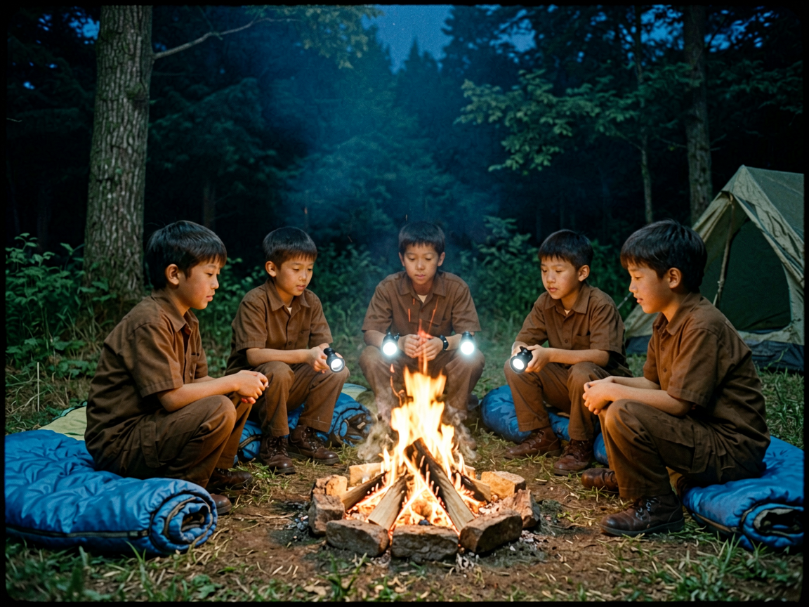

本文件为含认知危害信息之档案。未经授权接触可能造成不可逆影响。依据规程六·3，请在确认身份并行使「需要知道」权限后，方可继续查阅。接触期间请勿默念对象代号、复述对象口令，或于关联区域内携带对象影像。
兰陵花女士
一特殊处理规程
- 鉴于对象与认知关联绑定，禁止主动接触；处理以登记、观察、影响控制为主；
- 关联区域内禁止重复对象口令、默念对象代号或携带对象影像；
- 应急原则（源自验证结论）：感官封闭——闭眼、堵耳、将注意力集中于非对象刺激，可使部分对象失去目标；
- 关联地点设置常规化标识（生态修复 / 地质灾害区域，禁止进入），避免引起注意；
- 每季度执行关联物移除（蓝胶带、铃铛、告示牌、吉祥物衍生品），登记并封存；
- 新近报告按「普通迷路事件」口径处置，事后由联络员登记；
- 接触过认知危害信息的人员须接受评估，必要时转岗并定期复查。
二描述
概述。HGEF-ARC-001 为一名与「兰陵花女士求生系统」相关联的认知危害实体。初步判断属信念类意识体，无固定物理形体，其存续与「被看见、被想象」关联，依靠认知供养。对象最早记录于 ██ 年，与公园东南部林区及一套名为「兰陵花女士」的求生装置并行出现。
行为规律。对象可悬浮移动、越过目标，未观察到其物理接触物体；双脚离地约 20–30 厘米。接近即触发铃响并现身，随接触者数量与注意力强度而增强。对象行为与一套口令及铃铛声强绑定，在证词中被描述为会「带你回家」的存在。
异常特征。对象活动与认知关联绑定，被接触者反复出现「听到铃声并跟随」、事后无法回忆路线等表现；其死亡机制未知。若「信念催生」假说成立，对象不依赖可被破坏的物理结构，仅能通过切断认知来源使其失养。对象外观：约 3 米，蓝色连衣裙，下颌缺失，裙身缝满铃铛。
三事件记录
| 时间 | 事件 |
|---|---|
| ██ 年 | 东南部林区首次目击（证词）。「兰陵花女士」求生系统投入使用，寓意「迷路会有人带你回家」。 |
| ██ 年 | 安雅·贝克失踪案。公开结论维持「仍未寻获」。 |
| ██ 年 | 匿名证人失踪 6 周后返回，证词投递。所述「中断的山道」「临时溪流」事后未获独立验证。 |
| 近 12 个月 | 铃铛声报告累计 █ 起，其中 3 起报告者称「听到铃声并跟随」；报告点位较历史外扩约 █ 公里。 |
| ██ 年 | 「归零」行动（HGEF-OP-008）：D1 焚毁，最终接触，记忆清除，关联档案销毁。 |
四物证记录


另登记：D2 蓝胶带（移除 / 焚毁）、D3 铃铛（移除 / 焚毁）、D4 自制长矛（未发现）。
五附录 · 分析师意见
信念催生假说（圣鉴部 A 员）。对象疑似信念类意识体，无已知物理消灭机制，抹除手段未经验证；失败代价无法评估。
认知阻断路径（圣鉴部 B 员）。依据证人假说，对象依赖「被看见、被想象」维持存在。若切断其全部认知来源——实物、图像、名称、记忆——对象将失去供养。此路径不依赖物理消灭，与既有评估并不冲突。
献祭循环模型。依据证词建立的模型：对象处于持续饥饿期，区域内滞留者数量未知，若不处理，失踪人员复现率将持续上升。
六附录 · 证词节选（1998，匿名证人）
她停在两米外，和 1998 年一样。我看她，她也看我。我想起那句口令，想起我第一次看到她的那个晚上，想起那些被偷走的胶带和铃铛。我想：要是忘了她，1998 年那个晚上还算不算真的发生过。然后我告诉自己：看完这一次，就忘了。
——匿名证人 · 行动第三天 · 最终目视后转录七附录 · 人员核查
| 人员 | 身份 | 处置 |
|---|---|---|
| 匿名证人 | 原少年护林员俱乐部负责人（身份未核实） | 自愿参与行动，接受记忆清除；清除范围含 1998 年目击及此后全部相关记忆。 |
| 丹 | 退休护林员 | 列入记忆清除名单。清除后无异常，但仍会在公园门口坐着望向林区方向。 |
| 06 号队员 | 圣行部小队 | 行动第三天耳塞脱落短暂睁眼，起身向前七步；事后无法回忆该时段，列为清除优先对象。 |
| 原吉祥物扮演者 | 公园侧人员（身份略） | 拒绝交出演出服，称「她救过孩子」。演出服强制回收焚毁；本人列入记忆清除名单。 |
八附注
观察期 █ 年。观察期内若出现铃铛声报告，应立即终止「已抹除」判定并重启评估。本档案关联记录已转入销毁程序，唯一留存为故事档案 HGEF-ARC-001-T（《兰陵花不再开放》）。圣录部保留故事档案的理由是——行动必须被记录。